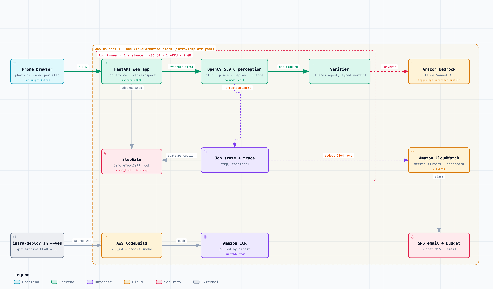
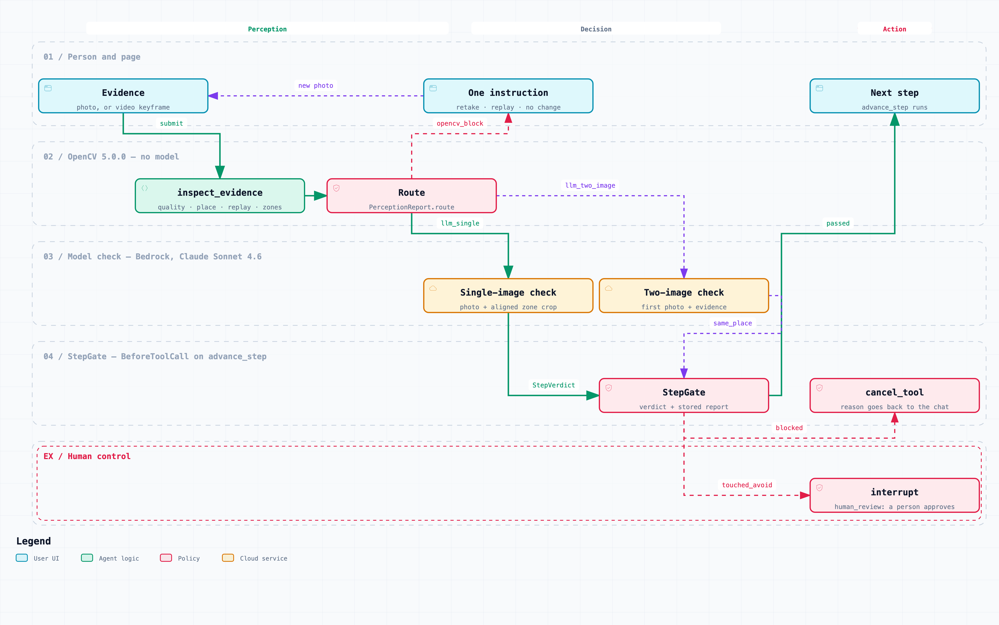
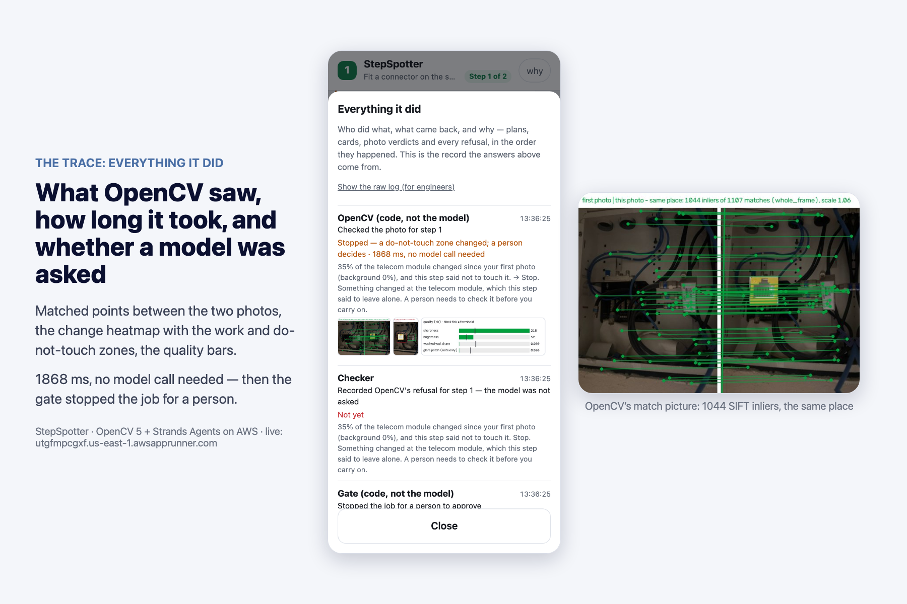

Every evaluation number in this report comes from
docs/EVAL.mdandeval/results/*.json, with the file and field next to it.
StepSpotter walks one person through one small home repair, one step at a time, on a
photo of their own thing, and opens the next step only after a photo proves the last one
was done. Until this entry, the proof was one vision-model call on one photo
(src/stepspotter/verifier.py:61). A single-photo model check has three blind spots
that a better prompt does not fix:
OpenCV 5 now looks at every evidence photo first, without a model, and what it finds changes what the system does next: refuse with one instruction, send the photo to a one-photo or a two-photo model check, or stop the run for a person.
People doing small, low-consequence jobs on their own home — low-voltage cabling, a
network jack, a pressure-washer assembly — who learn best from their own photo marked up
one step at a time. The first user is the author: the six evidence photos in this
repository are of his own structured-wiring panel and wall jacks
(fixtures/perception/scenes.json). StepSpotter's earlier build won the Everyday Agents
Bronze award at the AWS "Agents for Humans" hackathon (see Disclosure); no other users
are claimed. Jobs that need a licensed trade (mains wiring, gas, roofing, structural)
are refused by the planner with an empty step list (src/stepspotter/planner.py:26,
:105).

Everything above runs in one container on AWS App Runner, deployed by one CloudFormation
stack (infra/template.yaml). Every node in the diagram carries its source file and line
in docs/diagrams/architecture.html (checked against commit 750d152).
src/stepspotter/web/app.py) serves the phone page and the API.
A photo goes to JobService.verify (src/stepspotter/guide.py:405).src/stepspotter/perception/) runs first on every
evidence photo and returns a PerceptionReport with a decision and a route.Agent on Amazon Bedrock (Claude Sonnet 4.6) that returns a
typed StepVerdict (src/stepspotter/vision.py:65, src/stepspotter/verifier.py:61).
It is called only for photos OpenCV did not refuse.BeforeToolCall hook on the advance_step tool
(src/stepspotter/gate.py:64). The page's "next step" button calls advance_step
through a Strands HookRegistry with this hook (src/stepspotter/web/gated.py:23),
the same dispatch the agent loop uses./tmp/stepspotter); perception
rows are also printed to stdout as JSON for CloudWatch (src/stepspotter/store.py:113).The agent loop, as the competition's Agentic Vision award asks for it — perception, decision, action:

Three front doors use the same tools and the same gate. On the default page the person's
buttons drive the loop and code routes each photo. In agent mode (/agent,
src/stepspotter/web/agent_mode.py) and in stepspotter chat (src/stepspotter/cli.py:195)
the Strands Guide agent decides which tools to call — it can run inspect_photo before
submitting (src/stepspotter/guide.py:663) — and every answer on the web shows the tool
calls it made, what OpenCV decided about each photo, and any gate refusal. Agent mode is
capped like the rest: starting a job counts as a job, a turn with a photo as a photo check,
a text-only turn as an agent turn (60 a day for everyone, 20 an hour per address), and a
hook cancels tool calls past 8 in one turn (src/stepspotter/web/limits.py,
src/stepspotter/web/agent_mode.py).
Pinned: opencv-python-headless==5.0.0.93, numpy==2.5.4 (pyproject.toml). The image
build prints cv2 5.0.0 from inside the built container (infra/buildspec.yml:24). Full
description, every threshold and where it came from: docs/PERCEPTION.md.
| check | OpenCV 5 calls | file |
|---|---|---|
| faces blurred before anything else reads the photo | FaceDetectorYN (YuNet, opencv_zoo), GaussianBlur |
perception/privacy.py:59 |
| sharpness, exposure, glare | Laplacian, calcHist, threshold, connectedComponentsWithStats |
perception/quality.py:65, :107, :80, :85 |
| same place as the first photo | SIFT_create (on CLAHE luminance), BFMatcher.knnMatch, findHomography(USAC_MAGSAC), perspectiveTransform, isContourConvex, intersectConvexConvex |
perception/imgio.py:88, scene.py:55, :61, :78, :94, :101 |
| the photo was already sent (replay) | homography near identity and aligned difference near zero | perception/scene.py:247 |
| what changed in the work zone and in each do-not-touch zone | warpPerspective, cvtColor(LAB), createCLAHE, absdiff, morphologyEx, erode, against the change outside all zones |
perception/change.py:40, :48, :54, :56 |
| a video instead of a photo | VideoCapture, best keyframe by sharpness × exposure × match |
perception/frames.py:30, :67 |
The policy (perception/inspect.py, docstring, applied in order; the first rule that
fires decides):
| decision | route | next action |
|---|---|---|
retake (blur, dark, washed out, glare, zone out of frame, blurrier than the first photo) |
opencv_block |
refused, one instruction to the person, no model call |
replay |
opencv_block |
refused, no model call |
no_change (the step had to change the work zone; it did not) |
opencv_block |
refused, no model call |
touched_avoid (a do-not-touch zone changed) |
opencv_block |
the gate raises interrupt("human_review") |
place_unconfirmed (OpenCV cannot line the photo up with the first photo) |
llm_two_image |
the model gets both photos and must answer same_place; the gate needs same_place=true |
ok |
llm_single |
the model gets the photo and OpenCV's aligned crop of the work zone |
Quality rules after the evaluation. The first evaluation run showed OpenCV refusing
ordinary real photos of white things (basins, a white wall, a flashlight hot spot) as
glare or overexposure. The rules were changed, calibrating on the calibration half of the
evaluation set only (src/stepspotter/perception/thresholds.py):
GLARE_ZONE_NEW_FRAC = 0.10); anywhere else it is a note;OVEREXPOSED_MARGIN) on top of the absolute
0.12 (BRIGHT_FRAC_MAX); with no readable first photo, only a photo more than half blown
out is refused (BRIGHT_FRAC_ABS_MAX = 0.50);SHARP_RATIO_MIN), and it is
also read on a weak but sane fit of at least 12 matched points (WEAK_FIT_INLIERS),
because blur is what removes matches.On the calibration half, OpenCV alone then wrongly refused 1 of 103 good photos instead
of 20 (eval/results/opencv-before-glare-fix.json and eval/results/opencv.json,
summary.by_split.calibration.false_blocks).
Why place_unconfirmed is not a refusal. On our own photos, real re-shots of the same
place from another angle kept 4–8 SIFT inliers after the homography fit, the same range
as photos of different rooms (5–8); no inlier threshold separates them
(eval/results/opencv.md at commit ff97511, run on 2026-10-21 under the previous policy, which refused
3 of 5 such re-shots). So OpenCV confirms a place when it can (≥ 25 inliers,
perception/thresholds.py:152) and otherwise hands the question to the model with both
photos — a dearer check, never a refused person. The gate fails closed: a pass without
same_place=true cannot close the step (guide.py:449, gate.py:153).
Where OpenCV output changes a later decision — the evidence the Agentic Vision award asks for, each with a test:
source="opencv" and the model is
never called (guide.py:430; tests/test_perception_gate.py,
test_a_blurred_photo_is_refused_without_calling_the_model).same_place (guide.py:443;
test_a_photo_opencv_cannot_line_up_goes_to_the_two_photo_check).advance_step on a stored blocking report even beside a passing
verdict (gate.py:141; test_the_gate_refuses_on_a_blocking_report_even_beside_a_passing_verdict).advance_step into a request for a
person's approval (gate.py:91;
test_a_change_in_the_do_not_touch_zone_stops_the_run_for_a_person).inspect_photo lets the agent ask once for a photo from the first angle before it
submits (guide.py:663; test_inspect_photo_offers_one_ask_for_the_first_angle_and_never_refuses).retake or no_change goes
to the model with OpenCV's findings attached, so a false positive cannot trap a person
(perception/inspect.py, apply_stuck_rule; tests/test_perception_failures.py).A recorded live agent run (data/demo/agentic-opencv/: transcript.md,
trace.jsonl, NOTES.md). The real Guide agent (Strands, Claude Sonnet 4.6 on Bedrock)
with a scripted person, on 2026-10-21:
inspect_photo; OpenCV said retake
(sharpness 4, needs 45) in 44 ms with no model call; the agent relayed "hold the phone
still" and did not submit;place_unconfirmed); the person insisted, the agent submitted, and the two-photo check
(llm_two_image) answered same_place=false — not passed;llm_single) passed it, the agent called advance_step, the gate
allowed it, and step 2 was shown;advance_step on
step 2 was cancelled by the gate hook in code, because step 2 had no passed photo.
This was recorded as a follow-up turn on the same saved job, after the first attempt's
permissive agent asked for the step number instead of trying to skip.The plan was fixed from the repository fixture (plan.json) so that archive photos could
honestly pass a step; the agent, the Marker, the verifier, OpenCV and the gate were live.
19 Bedrock calls in all (run.json → total_with_follow_up.bedrock_calls). The first
recording, where no step could pass, is kept unchanged in run-1/.
Every OpenCV decision is one trace row with decision, route, llm_called and
ms_total (guide.py:320). On the page, "Everything it did" shows it as "OpenCV photo
check (code, not the model)" with the match lines, the change heatmap and the time.

Live URL, build 3f75518, 21 October 2026, judge scenario "Change in a do-not-touch zone". More screens in docs/screens/.
| component | what it does here | where |
|---|---|---|
| AWS App Runner | one instance, 1 vCPU / 2 GB, x86_64, min = max = 1 (job state is on local disk) | infra/template.yaml:440, :450 |
| Amazon Bedrock | Claude Sonnet 4.6 through a tagged application inference profile, so model spend is attributable to the stack | infra/template.yaml:355 |
| IAM | instance role may invoke one model and put metrics into one namespace; no secrets in the environment | infra/template.yaml:393 |
| CloudWatch | four metric filters on the JSON trace (PerceptionDecisions by decision, LlmCallsSaved, LlmCallsMade, PerceptionLatencyMs), three alarms (5xx, request flood, perception p95), one dashboard |
infra/template.yaml:502–654 |
| SNS + AWS Budget | alarm email; $15/month Budget created before the service | infra/template.yaml:160, :177 |
| CodeBuild + ECR + S3 | git archive HEAD → S3 → x86_64 build with an architecture check and an import smoke → ECR (immutable tags, scan on push) → App Runner by digest |
infra/deploy.sh:156, infra/buildspec.yml, infra/template.yaml:212, :322 |
One command deploys (infra/deploy.sh --yes) and one removes (infra/destroy.sh --yes);
full procedure, measured durations and cost in docs/DEPLOY.md, operations and the kill
switch in docs/OPERATIONS.md. Spend is bounded in code: per-address caps (6 jobs,
30 photo checks, 20 agent turns an hour) and global daily caps (6 jobs, 30 photo checks,
60 agent turns a day); jobs and photo checks alone bound the default page at ≤ 78 Bedrock
calls a day (src/stepspotter/web/limits.py, docs/OPERATIONS.md). A
photo OpenCV refuses costs no model call. Model price used: $3 / $15 per million input /
output tokens for Claude Sonnet 4.6 in us-east-1 (AWS Price List API, effective
2026-09-01, read 2026-10-21); at the 3,142 / 657 average tokens per call measured on the
first deployment that is about $0.019 per model call (docs/DEPLOY.md).
Deployed build: commit 8831099, image stepspotter-opencv@sha256:2a77953096bbb54f616843e6d05d1bade7db4c559eb62acd56f0b320bd4e23de
(ECR tag git-883109941a76), App Runner update finished 2026-10-21 14:57:58 UTC. The timings in
§6 were measured on a shared Mac, not on the App Runner instance (1 vCPU); the evaluation
did not measure OpenCV latency on AWS.
Full method, data provenance, every failure with pictures and the command behind every
number: docs/EVAL.md. Result files: eval/results/*.json.
Data. 548 cases (eval/cases/manifest.json): 90 real and 458 synthetic, from 6 photos
of our own house, 40 Wikimedia Commons photos with API-checked licences
(eval/cases/public/ATTRIBUTION.md) and 16 frames of the author's own under-sink video.
Split by scene or object into a calibration half (308) and a test half (240); no
threshold was tuned on the test half.
Configurations. A = the model on the evidence photo alone (the gate before OpenCV) · A′ = the model on the first photo and the evidence, every time · B = OpenCV alone · C = OpenCV then the model (the shipped gate).
Headline — the 50 test-half cases of the model sample (one fixed 54-case sample drawn before any model call; calls, time and money cover all 54 checks; C re-run after the quality-rule change, A and A′ not re-run because the model and its inputs did not change):
| A | A′ | C before the fix | C after the fix | |
|---|---|---|---|---|
| bad photos refused (of 33) | 11 | 19 | 31 | 30 |
| good photos wrongly refused (of 17) | 3 | 3 | 8 | 4 |
| … without the 2 mislabelled same-place pairs (of 15) | 2 | 1 | 6 | 2 |
| model calls for 54 checks | 54 | 54 | 24 | 31 (14 two-photo) |
| time p50 / p95 | 2 989 / 3 738 ms | 3 689 / 5 027 ms | 95 / 5 159 ms | 2 920 / 4 556 ms |
| $ per 100 checks (token count × list price) | 1.27 | 1.80 | 0.71 | 0.89 |
Sources: eval/results/compare.json (A, A′, C after: slices["test half"], perf) and
eval/results/compare-before-glare-fix.json (C before). The "without" row excludes OnQ
04→05 and Commons c09→c10, whose second photo cannot show the first photo's step (label
audit in docs/EVAL.md); counted from the rows of llm-sample.json, llm2-sample.json,
combined-sample-before-glare-fix.json and combined-sample.json.
compare.json → c_differs_from_a[].C_right); the one wrong case is the mislabelled
c09→c10. A′ agreed with C in 9 of the 20 (A_prime_agrees_with_C). Each case with its
pair of photos and both answers: eval/results/compare.md.compare.json → c_caught_by).compare.json → per_mode).OpenCV alone on all 548 cases (eval/results/opencv.json, summary.by_split, after
the fix): test half — 130 bad photos blocked, 6 passed and 38 sent to the two-photo check;
2 of 66 good photos wrongly blocked; p50 / p95 68 / 111 ms. Calibration half — 141 blocked,
7 passed, 55 sent on; 1 of 103 good photos wrongly blocked. Unmodified real photos:
0 of 56 refused (eval/results/originals.json: 6 OnQ, 40 Commons, 10 good video frames;
before the fix 8 of 56 were refused, mostly as glare). Of 4 video frames blurred by eye,
OpenCV refuses 1 (the whip pan); the other 3 go on to the model.
How to read these numbers. The model figures rest on 2 cases per synthetic class and 1–6 per real class, one run each; the model is not deterministic, so read them as examples, not rates. Synthetic bad photos are built to match the checks, so OpenCV's high catch rate on them is expected by construction; the informative numbers are the real classes, the false refusals and the unmodified photos. The share of bad photos in the set is constructed, not observed in use. Timings are from a shared Mac.
793b987 it
costs a two-photo model call instead of a refusal; before that, OpenCV refused 3 of 5
such pairs in our set (eval/results/opencv.md at commit ff97511). OpenCV alone can no longer reject a
photo of another room; only the model can, through same_place.unreliable and decide nothing, so no_change and touched_avoid
fire only for photos taken from near the first viewpoint (docs/PERCEPTION.md).src/stepspotter/marker.py,
data/demo/agentic-opencv/NOTES.md); a wrong zone makes a right change look wrong.tests/test_privacy_faces.py); no
detection rate is claimed.docs/OPERATIONS.md).eval/results/opencv-failures.json, pictures in
eval/results/figures/opencv-failures-01..02.jpg): mirror-image look-alikes pass
everything; a resent photo with a drawn circle passes; the smeared trap frame f0195 passes
the blur check; since the glare fix 11 of 23 synthetic glare discs pass OpenCV and are
left to the model; 3 good synthetic photos are still refused (touched_avoid twice,
blurry once).3f75518), which wraps long captions
instead of cutting them.planner.py:26). That
refusal is a model judgement, not a certified hazard classifier.interrupt, not a cancel), and a hazard seen by the model
stops the run too (gate.py:76). A refusal always comes with the reason and one
instruction; the stuck rule keeps a false positive from trapping anyone.guide.py:449, gate.py:153).faces_checked). Photos live only on the instance's
ephemeral disk, are not copied to S3 or a database, and are gone on every redeploy.
Model-invocation logging is not turned on. CloudWatch gets perception metrics and
decisions, no image data; rate-limit rows carry a salted hash of the caller address
(docs/OPERATIONS.md, src/stepspotter/store.py).STEPSPOTTER_PAUSED=1), a Budget alert and a request-flood alarm.infra/template.yaml:271, :393).tests/fixtures/ATTRIBUTION.md); public photos in the
evaluation carry their licence and attribution (eval/cases/public/ATTRIBUTION.md).
The repository's MIT licence does not cover third-party photos.StepSpotter was built on 9–14 September 2026 for the AWS "Agents for Humans" hackathon on
Devpost, where it won the Everyday Agents Bronze award (announced 14 October 2026). It was
also submitted to the AI Builders hackathon, whose judging has not finished. The original
code is public at https://github.com/retailbox-automation/stepspotter, commit 80979af
(pushed 2026-09-14). It is imported here as the first commit, 295e3f3, with the text
copied from manufacturers' manuals removed (the bundled manual cache keeps only links and
page numbers).
Everything OpenCV 5 — the perception package, its integration into the gate and the
verifier, the face blurring, the evaluation harness, the AWS stack, the diagrams and this
report — was built on 21–24 October 2026, inside this competition's window: commits
9cc6ca1 through 8831099, the deployed code; the commits after it change documentation only
(git log --reverse 295e3f3..HEAD).
We read the Official Rules for a clause on previously submitted projects and found none. The nearest is the timeline: «From August 26 through October 26, teams will build, evaluate, document, and submit their final projects.» The rules also say «Disclosed agents and automated programs that are integral to the submitted project are allowed and encouraged».
same_place); in agent mode the Strands Guide agent decides which tool to call next;
a tool-less agent answers questions typed into the chat. OpenCV runs before the model
on every evidence photo, and the gate sits under every tool call.Details: docs/AI-USE.md.
git clone https://github.com/retailbox-automation/stepspotter-opencv && cd stepspotter-opencv
python3.12 -m venv .venv && .venv/bin/pip install -e ".[dev]"
tools/fetch_models.sh # YuNet face detector, SHA256-checked
.venv/bin/python -m pytest -q -m "not integration" # offline: 444 passed, 1 skipped
.venv/bin/python eval/build_set.py && .venv/bin/python eval/run.py --config opencv
infra/deploy.sh --yes # needs an AWS account; see docs/DEPLOY.md